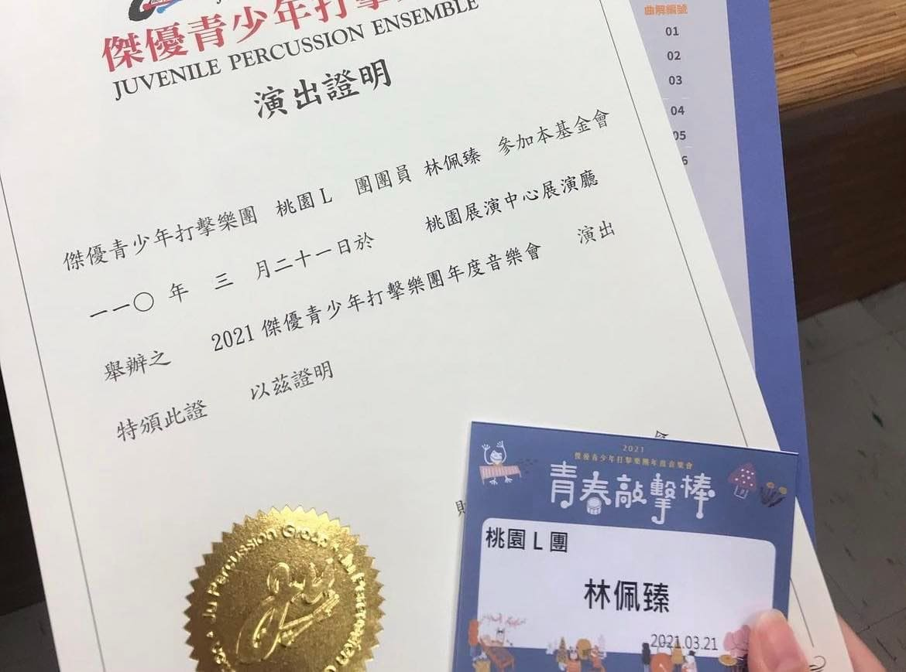

基本資料
|
程式技能 | programming skills |
專業技能 | skills |
|
HTML 85% CSS 80% JAVA 75% C# 65% |
音樂 90% 運動 95% 跳舞 80% 烹飪 75% |
社團活動
我一直都對韓國Kpop文化很熱愛，所以在大一的時候參加了韓國文化研究社，除了可以學習韓文還可以學習舞蹈。我也在社團中完成第一次的成發，也讓我對跳舞更有自信，對我來說是非常有意義的時刻。
個人經歷
| AWS AIoT Workshop | 我在2022年參加了AWS舉辦的AWS AIoT Workshop，針對AWS雲端服務所設計的訓練課程。是由AWS的專家來與我們分享AWS的服務，結合雲端基礎概念，延伸人工智慧、物聯網及大數據，也更認識現代企業的商業轉型及資訊科技的應用，聽完之後真的收穫滿滿。除此之外，AWS也有提供雲端學習平台，也可以多加利用。 |
||
 |
我從國小一年級就開始接觸擊樂，一直到18歲順利從打擊樂畢業，也為我12年的打擊樂生涯畫上句點。一開始的我是非常排斥上台，非常恐懼需要在台上表演，甚至表演的時候都擺著一副臭臉，但隨著我慢慢長大，體會到我是個表演者，我需要讓自己投入在音樂裡，觀眾才會被我帶動，而不是毫無感情的上台表演。我了解了之後，我開始放開自己，讓自己的身體跟著音樂一起舞動，體會到這是非常美好的一件事情。雖然已經畢業了，但我希望有一天，我能再拿起琴棒表演。 |
|  |
| 管理學 | |
特殊表現
| 證照 | |
|
| 獎狀 | |
|